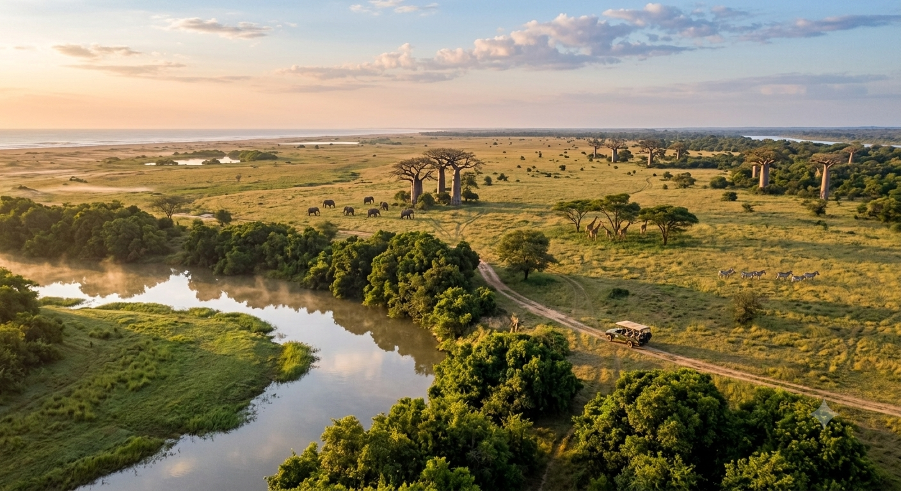
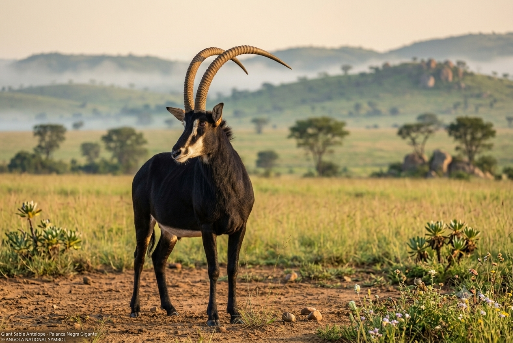
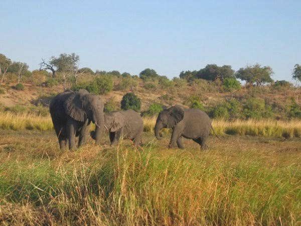
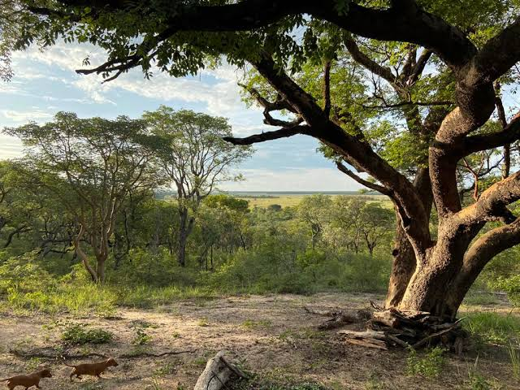

Nossos Safaris
Escolha a melhor experiência para si e descubra a vida selvagem angolana.

3 dias PopularSafari no Parque da Kissama
Explore a vida selvagem no coração de Angola com elefantes, palancas e diversas espécies.
 5 dias
Luxo
5 dias
Luxo
Safari no Parque Nacional do Iona
O maior parque nacional de Angola, com uma fauna e flora deslumbrantes.

4 dias FotográficoSafari Fotográfico
Capture a fauna e flora angolana com um guia especializado em fotografia.

3 dias ObservaçãoSafari de Observação de Aves
Descubra a diversidade de aves do Parque Nacional da Cameia com um especialista.
2 dias
Família
Safari em Família
Uma experiência inesquecível para toda a família no Parque da Kissama.

4 dias NaturezaSafari em Mavinga
Região de savanas e rios, perfeita para safaris e aventura em Angola.